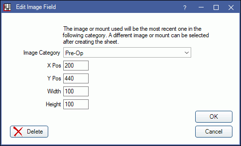

Sheet Patient Image
Include the most recent image from a category when generating a sheet by using the Pat Image field.
In Edit Sheet Def, click Pat Image.
Alternatively, double-click an existing Pat Image field from the Fields list to edit.
Patient images are a Sheet Field Types that adds a patient-specific image.
The image inserted in the generated sheet will be the most recent image added to the Imaging Module category selected. If multiple images need to be included, store each image in a separate category. Supported image types include bmp, gif, exif, jpg, png, and tiff.
As an alternative, users can use the Add Field button on Fill Sheet window to add specific images from the Imaging Module to a sheet; this method allows multiple images from the same category.
Examples:
- To show a patient's picture, store all patient pictures in the same Patient Pictures category, then select the Patient Pictures category for this element.
- To show pre and post treatment images, create two Pat Image sheet elements. The pre-treatment images should be stored in one image category; the post-treatment images should stored in another.
Image Category: Select the Definitions: Image Category where the images are stored. When the sheet is created, the first image listed in the category (i.e., the most recent image) will always be used.
X and Y Pos: Set the location of the upper left corner of the image in relation to the x and y axis. X = horizontal. Y = vertical.
Width: The width of the image.
Height: The height of the image.